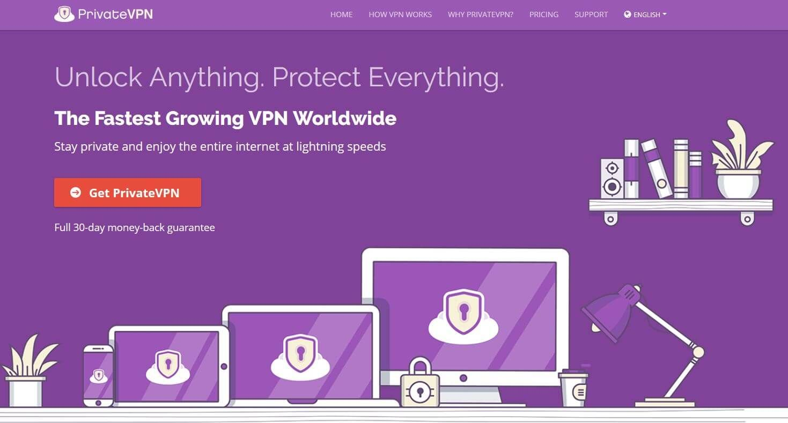

PrivateVPN Review
7.3
Good
Our verdict: A great all-around choice. Reasonable pricing, servers available in a respectable number of countries, and some super fast speeds in testing. Definitely worth giving a try.

Summary Review
Founded in 2009 in Stockholm, Sweden, PrivateVPN offers affordable prices, a simultaneous connection of up to 6 devices, tight security, user-friendly interface, and the ability to access Netflix. It is a strict no-logs VPN service that has over 150 servers located across 60 countries so you can stay securely connected wherever you are in the world.
Privacy / Anonymity
Whether you’re using a VPN to access geo-restricted content or to deter the government or your ISP from spying on your browsing habits, PrivateVPN has got you covered. First off, it is able to mask your IP address as well as protect your data with a number of encryption protocols such as OpenVPN or L2TP/IPsec. As soon as you connect to the app, PrivateVPN automatically selects the best VPN protocol for your network. PrivateVPN also features an automatic kill switch so your data remains secure even if your connection suddenly drops. One thing to note though is that the kill switch feature is only currently available on the Windows app which is a bit of a bummer. Still, it has DNS and IPv6 leak protection for added security.
Now, if you’re worried about the fact that PrivateVPN falls under the 14-Eyes Alliance jurisdiction, don’t be! The company is pretty straight-forward and transparent as to what sort of information they collect and for which purpose. They have clearly stated that it “does not collect or log any traffic or use of its service”. The only information they require is your email address and password which will be used to create your account after registration.
Now, if you’re venturing into the East Asia region, you won’t have to worry about getting blocked by The Great Firewall of China. It has a stealth VPN mode that hides your VPN use and bypasses China’s tenacious blocks.
Streaming and Torrenting
If Netflix is high on your priority list then you should definitely consider PrivateVPN. Unlike other VPN vendors that can make your streaming experience a bit complicated, PrivateVPN made everything as seamless and user-friendly as possible, even going as far as labeling which servers work for specific streaming sites. This takes the guessing game out of the equation and you can sit down and enjoy streaming your favorite content without any hassle. PrivateVPN has servers designated for Netflix streaming in countries like the US, UK, Italy, Peru, Germany, and Canada. Now, while not all of their servers work with Netflix, the designated ones did work wonderfully as promised. Moreover, they have extended labeling servers to other streaming services such as ABC, BBC iPlayer, Hulu, and Amazon Video. Torrenters will also be pleased to know that PrivateVPN also supports unlimited P2P file sharing and with their unrestricted bandwidth, you won’t have to worry about inconsistent download speeds.
Speed and Reliability
With only 150+ servers, it is understandable to worry that PrivateVPN might be struggling in the speed and reliability department. However, test results showed that they are on par with other providers with thousands of server locations. This only goes to show that the network size isn’t really a deal-breaker. We tried to connect to a number of its servers to see if our speeds suffer as is usually the case with using VPN and started off with a base download speed of 65Mbps. Connecting to a server in the US resulted in a download speed of 22.3Mbps while another server delivered a download speed of 61.26 Mbps. The servers in the UK weren't so bad either, with download speeds of 59Mbps. The speed took the most hit when we tried connecting to a server in Australia as it plummeted down to just 3.38Mbps. This just goes to show that the speed suffers when you connect to servers located halfway across the globe. Still, the average connection speed is pretty decent and is good enough for streaming, downloading files, or online gaming.
Platforms and Devices


As we have mentioned previously, the automatic kill switch feature is only limited to the Windows App which is probably its biggest weakness. Other than that, it has dedicated apps for Windows, Mac, Android, and iOS devices. There are also manual guides available for Linux, Kodi, and other compatible routers. Now, while most other providers only allow 5 devices for simultaneous connection, PrivateVPN goes a step further by allowing 6 devices under a single subscription which makes it a great choice for families, small businesses, or gadget freaks.
Server Locations
PrivateVPN currently has over 150+ servers located in 60 countries and this network is still expanding. While this doesn’t sound impressive compared to other VPN providers that boast of thousands of servers, it really is only due to the fact that it is still relatively new in the market with far fewer users. Still, its impressive performance speaks for itself so the network size is a moot point.


Customer Service
There seems to be a lot of confusion regarding PrivateVPNs live chat feature with some people saying it is not available 24/7 or that it’s only available in European daylight hours. Well, there is only one way to find out. I tried using the live chat button and was instantly connected to a support agent. He confirmed that the live chat option is currently not available 24/7 and that there is no specific time frame on its availability. It would be good if they can be more transparent about this. Other than that downside, their support page contains helpful resources such as detailed installation guides as well as an FAQ page. If you encounter a more complicated issue, they also have a TeamViewer which gives technical support representatives remote access to your device so they can troubleshoot on your behalf.
Pricing
Similar to other VPN providers, PrivateVPN offers three different plans that vary only in duration. The prices are surprisingly affordable with discounts offered on longer plans. One month costs $7.67 while a 3-month plan is available for $4.88 per month. You get the most bang for your back when you pay upfront for 13 months as the monthly fee dwindles to just $3.82. All of the plans come with a 30-day money-back guarantee.
PrivateVPN User Reviews
- "I used free VPN service to watch Japanese Amazon Prime Video before, but Amazon has changed their algorithm and couldn't watch it. I tried other 2 VPN services, but both of them couldn't connect. I was thinking to cancel amazon prime. But this privateVPN is great. I can watch it on Mac, iPhone and amazon TV stick."